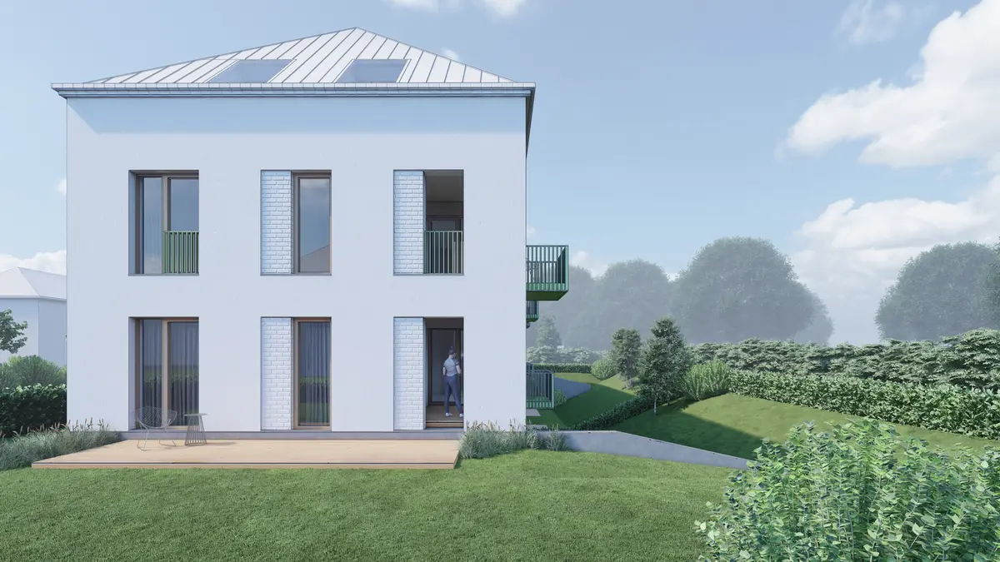
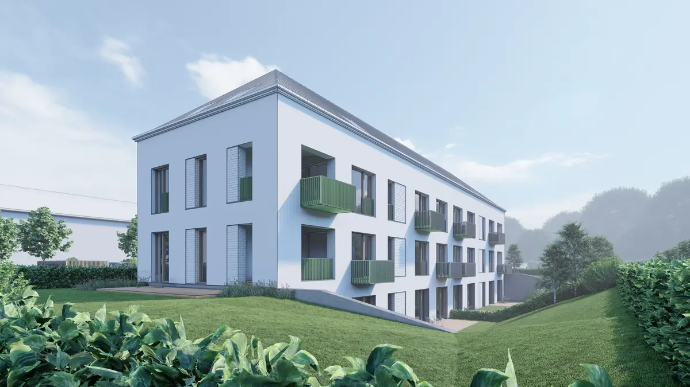

Bytový dům Týnec nad Sázavou

Objekt je navržen s ohledem na měřítko okolní zástavby. Členění fasády a materiálové řešení podtrhují rezidenční charakter stavby.


Objekt je navržen s ohledem na měřítko okolní zástavby. Členění fasády a materiálové řešení podtrhují rezidenční charakter stavby.
